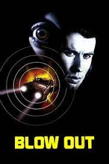

"Blow Out" (1981)
Plot: A movie sound effects technician accidentally records a murder involving a politician and struggles to find the truth and bring it to light. Stars: John Travolta, Nancy Allen, John Lithgow Filming locations: Wissahickon Bridge, 30th Street Station, Penn's Landing, Philadelphia City Hall, Penn Square, Macy's Center City, Independence Seaport Museum
Main Actors:Mel
Age Restriction:PG 12